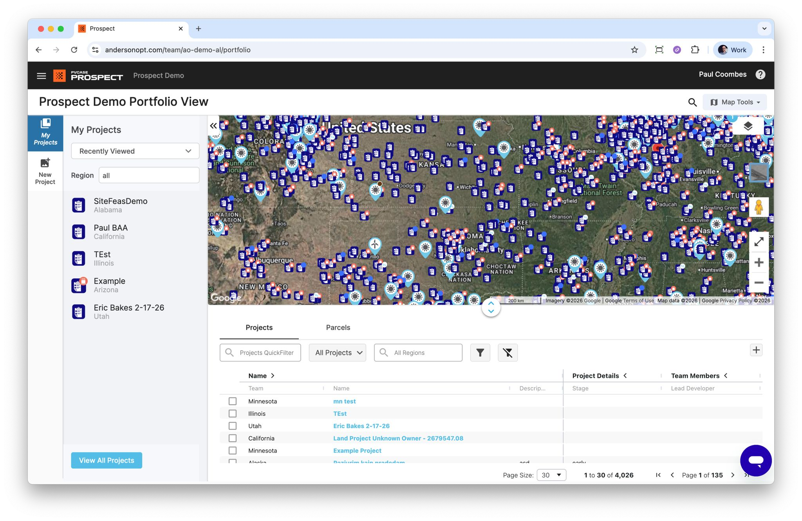

A sample of projects to give a flavour of my experience.
PVcase
Silos to connected platform
Context
Today PVcase has four siloed point solutions. Finish the work in one and the hand-off is a PDF, data and user insights are lost. The flagship product has saturated its TAM. We need to connect the point solutions into a platform, leverage existing users for more 0-1 bets.
Challenge
First to create a data model that works across siting, developing and operating a utility PV plant that matches the mental model of many personas.
Process
Primary research across different personas, mapping the domain. Creating an object model abstraction, workflows and then UI.
Latest app design to be shipped Q1 2027not yet shipped.
Not shareable here.
PVcase
Legacy app
